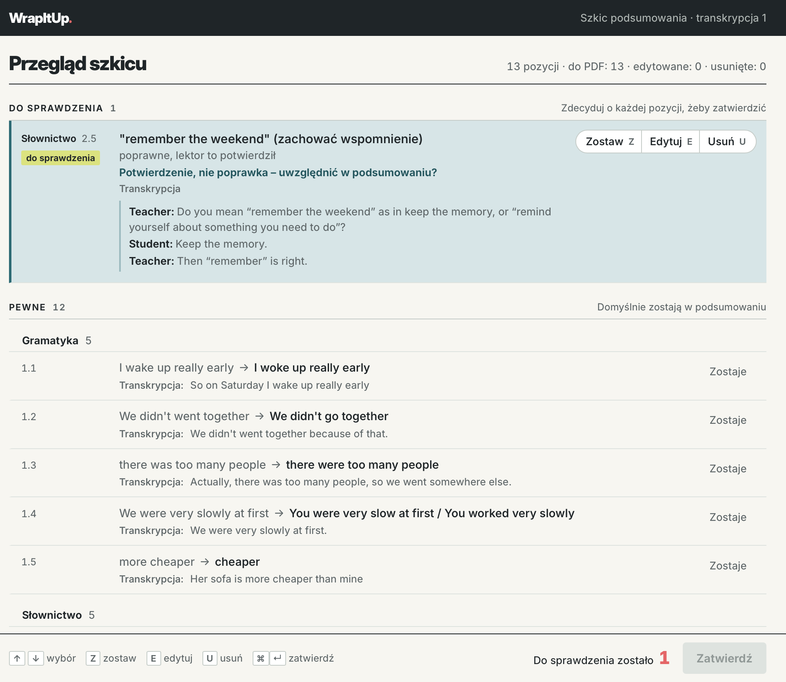
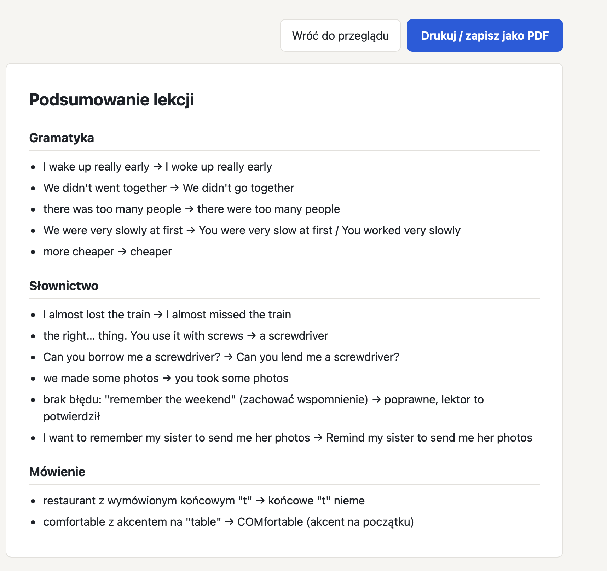
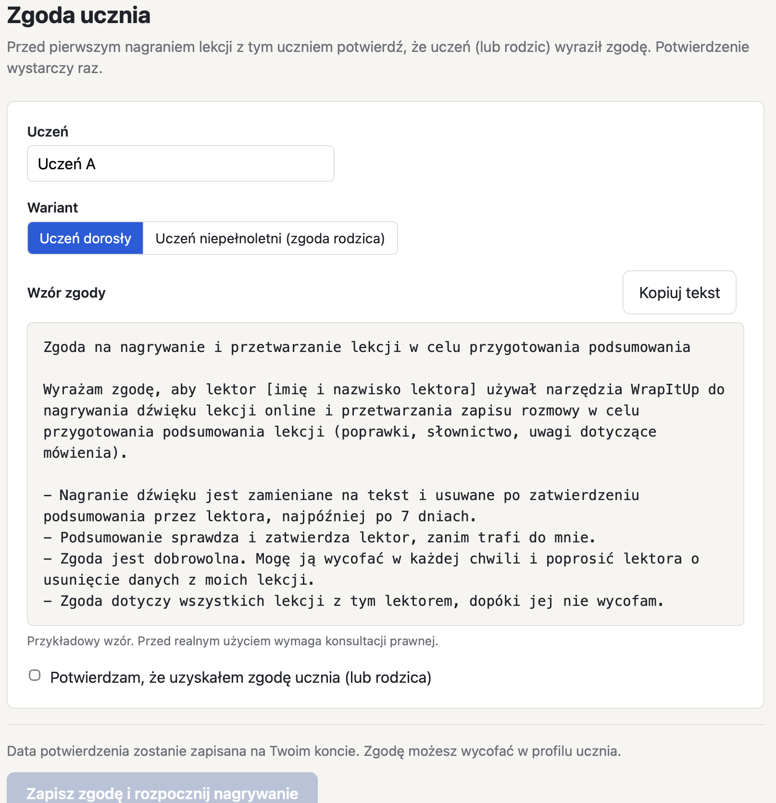
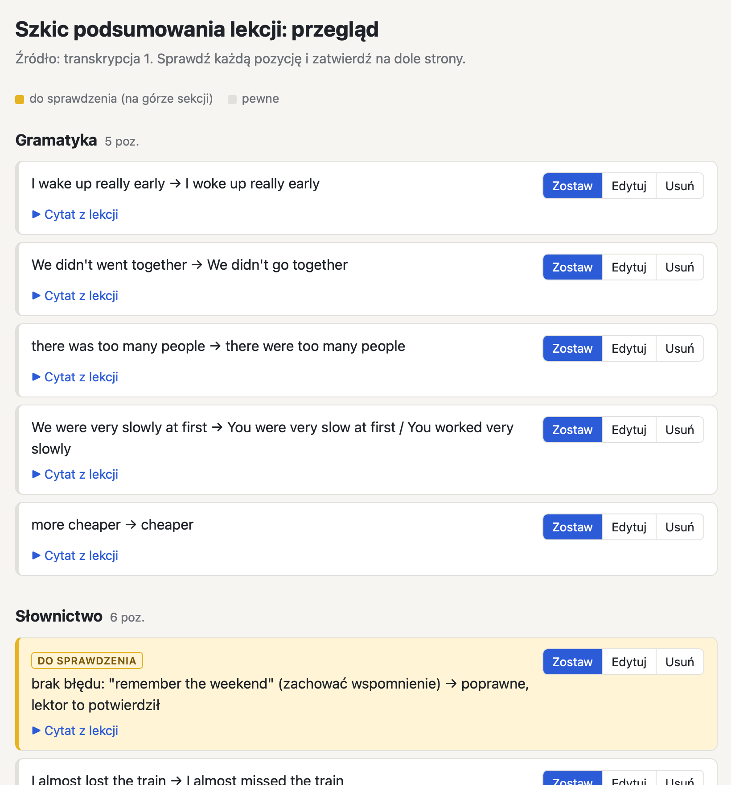
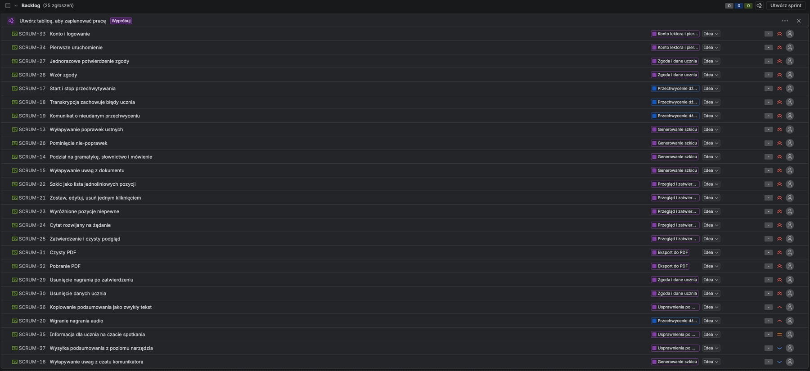

WrapItUp.
Rozszerzenie do Chrome dla lektorów językowych, które łączy poprawki z lekcji online w szkic podsumowania. Lektor go sprawdza, zatwierdza i wysyła uczniowi.

Otwórz prototyp na pełnym ekranie
- Autor
- Przemysław Knesz
- Rola
- Product Owner: discovery, wymagania, backlog i priorytetyzacja, metryki sukcesu
- Użytkownicy
- Niezależni lektorzy językowi prowadzący zajęcia online
- Status
- Koncepcja produktu z prototypem, przed walidacją techniczną
Kluczowe liczby
- 15
lektorów w ankiecie, 7 źródeł naukowych, 8 konkurentów
- 13/15
najbardziej męczy zbieranie uwag z kilku miejsc
- 19/22
poprawek prototyp zapisał poprawnie; wychwycił wszystkie 22
- ≤ 5 min
cel na podsumowanie, dziś mediana 6–10 min
W skrócie
Ok. 2 minuty
- Problem
- Niezależni lektorzy online po każdej lekcji ręcznie składają poprawki z kilku miejsc (głos, wspólny dokument, notatki) w jedno podsumowanie.
- Discovery
- 7 źródeł naukowych, analiza 8 konkurentów i ankieta wśród 15 lektorów. Pierwotna teza, że lektorzy gubią dużo poprawek ustnych, nie potwierdziła się. Potwierdził się za to inny ból: 13 z 15 lektorów najbardziej męczy zbieranie uwag z kilku miejsc.
- Decyzja
- Zmieniłem kierunek. MVP to rozszerzenie Chrome, które łączy poprawki ze wspólnego dokumentu i z dźwięku lekcji w jeden szkic, a lektor go sprawdza i zatwierdza.
- Prototyp
- Model wychwycił wszystkie 22 poprawki z 3 transkrypcji, ale 3 zapisał z błędem. Test pokazał też wadę UX ekranu przeglądu, którą poprawiłem w kryteriach akceptacji.
- Dalej
- Walidacja techniczna (T1–T4) przed budową, potem pilotaż z 5 lektorami. Cel: podsumowanie w 5 minut lub szybciej, zamiast obecnych 6–10.
Kluczowe liczby
- 15
lektorów w ankiecie, 7 źródeł naukowych, 8 konkurentów
- 13/15
najbardziej męczy zbieranie uwag z kilku miejsc
- 19/22
poprawek prototyp zapisał poprawnie; wychwycił wszystkie 22
- ≤ 5 min
cel na podsumowanie, dziś mediana 6–10 min
Czego się nauczyłem
- Własne doświadczenie to hipoteza, a nie dowód.
- Niepotwierdzona hipoteza też jest wynikiem.
- Metoda oceny ma taki sam wpływ jak sam wynik.
- Priorytetyzacja to decyzja, a nie wynik wzoru.
- Dobry backlog zależy od wąskiego gardła.
Co zadziałało
- Mierzalne hipotezy przed ankietą.
- Pivot zamiast porzucenia projektu.
- Prototyp przed backlogiem.
Co zrobiłbym inaczej
- Wywiady przed ankietą.
- Progi testu prototypu zapisane przed testem.
- Najpierw najtańszy test ryzyka.
Pełne case study
Ok. 25 minut
Pełne case study · Ok. 25 minut
WrapItUp: case study Product Ownera
- Autor
- Przemysław Knesz
- Rola
- Product Owner: discovery, wymagania, backlog i priorytetyzacja, metryki sukcesu
- Użytkownicy
- Niezależni lektorzy językowi prowadzący zajęcia online
- Status
- Koncepcja produktu z prototypem, przed walidacją techniczną
- Typ projektu
- Indywidualne studium przypadku
Geneza pomysłu
Podczas pracy jako lektor języka angielskiego często występuje sytuacja, gdzie część poprawek podczas lekcji online wprowadzam na czacie wideo komunikatora, część ustnie, a część w pliku, na którym współpracuję z uczniem. Największy problem dotyczy jednak korekt ustnych, szczególnie w zakresie wymowy i słownictwa. Wprowadzam je na bieżąco na głos, aby naprowadzać ucznia na właściwy tor bez wybijania go z rytmu rozmowy i blokowania płynności. W efekcie większość tych cennych uwag bezpowrotnie ulatuje, ponieważ wyzwaniem jest jednocześnie aktywnie słuchać, prowadzić rozmowę i wszystko notować.
Przygotowanie rzetelnego podsumowania po każdych zajęciach wymaga zebrania poprawek ze wszystkich kanałów, co jest czasochłonne, a uwagi przekazane wyłącznie ustnie często zostają pominięte.
Ten proces ułatwiłoby narzędzie działające w tle, które automatycznie przechwytuje i kategoryzuje uwagi lektora (Grammar, Vocabulary, Speaking) i na koniec lekcji generuje jeden spójny dokument. Narzędzie mogłoby skrócić czas przygotowywania podsumowania przez nauczyciela oraz zapewnić uczniowi uporządkowany materiał do powtórek.
Problem discovery i luka rynkowa
1.1 Punkty bólu i dotychczasowe dowody
| Hipoteza | Dowody w literaturze | Pewność | Jak to sprawdzę |
|---|---|---|---|
| H1. Lektor gubi dużą część poprawek ustnych, więc przepadają | Brak bezpośrednich badań. Pośrednio: uczeń nie zapamiętuje korekty podanej w trakcie wypowiedzi (Nhac, 2022). Tło: recasty są najczęstszą formą korekt (Yuksel i in., 2023) | Niska | Ankieta: ile z korekt ustnych zapisują lektorzy? |
| H2. Lektor nie jest w stanie jednocześnie prowadzić rozmowy i notować | Nauczyciel online przełącza się między mową, czatem i wspólnym dokumentem (Wigham i Satar, 2021); korekta w trakcie wypowiedzi rozprasza uczniów (Nhac, 2022) | Niska | Ankieta |
| H3. Zbieranie uwag po lekcji jest czasochłonne | Niepłatna praca poza lekcją, w tym ok. 10 min raportu po 25-minutowej lekcji według jednej nauczycielki (TEFL Workers Union); autor sam ocenił większość czasu na feedback jako zmarnowaną (Barnes, 2023) | Niska | Ankieta: ile minut po lekcji zajmuje podsumowanie |
| H4. Uczniowie często nie notują na zajęciach online | Morehead i in. (2019): 49% notuje na wykładach online vs 96% stacjonarnie; Jin i Webb (2025): 51% notowało, 33% zapisało słowa docelowe | Średnia | Ankieta wśród lektorów: jaka część ich uczniów notuje poprawki (pomiar pośredni) |
Źródła i ich wyjaśnienie
Yuksel, Soruç i McKinley (2023), IRAL 61(2), 387–414
Co zbadano: 51 doświadczonych nauczycieli EFL na uczelniach. Porównano ich deklaracje o korekcie z tym, co faktycznie robili na lekcjach.
Wynik: w ankiecie oceniali korektę natychmiastową i odroczoną jako równie ważne, a w klasie 66% korekt było natychmiastowych, 34% odroczonych. Deklaracje o momencie korekty nie pokrywały się z praktyką.
Ograniczenia: nauczyciele uniwersyteccy, nie lektorzy indywidualni. Liczba 66% dotyczy momentu korekty, nie jej ulotności.
Nhac (2022), European Journal of Educational Research 11(3), 1643–1655
Kogo zbadano: ankieta przeprowadzona na 425 studentach, wywiady z 13 nauczycielami.
Wynik: nauczyciele przyznali, że często korygują odruchowo, głównie recastami (szybkimi przekształceniami), bo nie zabierają czasu. Uczeń z wywiadu powiedział, że przy korekcie w trakcie wypowiedzi powtarza poprawną formę machinalnie i od razu zapomina. Uczniowie woleli korektę po zadaniu, ale błędy zmieniające znaczenie chcieli poprawiać od razu.
Ograniczenia: Wietnam, uczelnia prawnicza, deklaracje.
Anugrah, Friatin i Sugiarto (2024), Jurnal Wahana Pendidikan 11(2), 251–262
Kogo zbadano: jeden nauczyciel i czterech uczniów szkoły zawodowej.
Wynik: nauczyciel stosował recast, korektę wprost i powtórzenie, głównie dla wymowy i przyimków. Z powodu problemów z łączem używał czatu, tablicy i WhatsAppa.
Ograniczenia: jeden nauczyciel. Transkrypty to dialogi odgrywane przez uczniów, nie spontaniczna rozmowa.
TEFL Workers Union, „The real cost of teaching online for the British Council”
Tekst związku nauczycieli, w którym członkowie szacują swoją rzeczywistą stawkę po doliczeniu niepłatnej pracy.
Treść: według jednej nauczycielki 10 minut przygotowania i 10 minut pisania raportu przypada na 25-minutową lekcję prywatną (realna stawka spada z 15 do 9,60 funta za godzinę).
Ograniczenia: szacunki.
Morehead, Dunlosky, Rawson, Blasiman i Hollis (2019), Memory
Kogo i co zbadano: ankieta 577 studentów Kent State University o nawykach notowania na zajęciach stacjonarnych i online.
Wynik: 96% notuje na zajęciach stacjonarnych, 49% na wykładach online. Najczęstszy powód braku notatek online: materiał jest dostępny w sieci (67%). 67% przyznaje, że notowanie czasem przeszkadza w zrozumieniu wykładu. 52% nigdy nie uczono notowania.
Ograniczenia: studenci zaliczający udział w badaniu (głównie z zajęć z psychologii). Nie dotyczy korekt językowych.
Barnes (2023), Technology in Language Teaching & Learning 5(2), 37–58
Co zbadano: 15-tygodniowy semestr na japońskim uniwersytecie (61 studentek). Dwie grupy dostawały w Moodle korektę pisemną z wyjaśnieniem metajęzykowym, grupa kontrolna ogólne komentarze. Feedback miał być przeczytany w domu, a logi Moodle pokazywały, kto go faktycznie otwierał.
Wynik: brak istotnych różnic w poprawności między grupami. Z 19 osób, które ukończyły zadania w grupach korygowanych, tylko 6 sprawdzało feedback co tydzień, o cztery mniej, niż deklarowało, że go czyta. Autor oszacował czas na feedback na ok. 10 godzin tygodniowo.
Ograniczenia: dotyczy korekt pisemnych, nie ustnych ani podsumowań lekcji.
Jin i Webb (2025), Language Teaching Research 29(2), 560–587
Kogo i co zbadano: 86 studentów anglistyki z uniwersytetu w Chinach obejrzało w klasie nagranie wykładu nauczyciela (26 min, w segmentach, z pytaniami nauczyciela). Notowanie było dobrowolne, a uczestnicy nie wiedzieli, że notatki zostaną sprawdzone.
Wynik: notowało 51,2% (44 osoby), a informacje o słowach docelowych zapisało 32,6% (28 osób). Dla słów zapisanych w notatkach szanse na poprawną odpowiedź były ok. 15 razy większe w teście natychmiastowym i ok. 10 razy w odroczonym (analiza na poziomie słów).
Ograniczenia: nie dotyczy zajęć online.
Wigham i Satar (2021), ReCALL 33(3), 195–213
Co zbadano: studium przypadku jednej doświadczonej nauczycielki języka uczącej przez wideokonferencję, analiza tego, jak wydaje polecenia do zadań.
Wynik: nauczycielka łączyła mowę z tekstem pisanym (wspólny dokument, czat, linki) i często przełączała się między tymi zasobami, np. kopiowała link z dokumentu i wysyłała go na czacie.
Ograniczenia: jedna nauczycielka; dotyczy instrukcji do zadań, a nie korekty błędów.
1.2 Kontekst rynku
Rynek globalny. Według Meticulous Research (raport z marca 2026) rynek nauki języków online był wart 15,8 mld USD w 2025 r. i ma osiągnąć 50,6 mld USD do 2036 r. (CAGR 11,1%). Osobny raport tej firmy (styczeń 2025) szacuje, że segment korepetycji językowych online osiągnie 12,7 mld USD do 2032 r. (CAGR 20,2%). Największy udział mają w nim lekcje indywidualne i język angielski, czyli model pracy typowy dla niezależnych lektorów. Szacunki różnią się między raportami i firmami badawczymi, więc traktuję je jako tło, a nie wielkość mojego rynku.
Polska. Nie znalazłem danych o liczbie niezależnych lektorów prowadzących lekcje online. Według danych platformy BUKI, przytoczonych w materiale partnerskim na PAP MediaRoom (listopad 2025), język angielski to 35% zapytań o korepetycje, a niemiecki 8%. Według CBOS ok. 80% rodziców płaci za dodatkowe zajęcia dzieci, średnio blisko 950 zł miesięcznie (kwota obejmuje też np. zajęcia sportowe).
Co z tego wynika dla WrapItUp: rynek, na którym działają lektorzy, jest duży i rośnie, ale nie wiem, ilu lektorów w Polsce mogłoby z narzędzia korzystać ani ile zapłaci. Gotowość do płacenia sprawdzę w teście T5.
Źródła: Meticulous Research (2026), Online Language Learning Market · Meticulous Research (2025), Online Language Tutoring Market · PAP MediaRoom (2025), Rynek korepetycji w Polsce 2025 (dane BUKI i CBOS)
1.2.1 Konkurencja
| Rozwiązanie | Dla kogo? | Co generuje? | Wyodrębnia korekty lektora? | Działa poza własną platformą? | Lektor zatwierdza szkic? |
|---|---|---|---|---|---|
| Live English Smart Reports | Uczniowie i nauczyciele szkoły Live English | Wnioski, słownictwo, korekty, uwagi o płynności, plan działania. AI szkicuje, nauczyciel zatwierdza | Jest sekcja „Corrections”, ale brak informacji o źródle (głos, czat, plik) | Nie | Tak |
| Lessonspace Lesson Summaries | Korepetytorzy używający Lessonspace | Ok. 300-słowne podsumowanie nagranej lekcji i sugerowane kolejne kroki | Nie: opisuje „problem areas”, pomija obserwacje o wynikach ucznia | Nie | Nie podano |
| Preply, Lesson Insights | Uczący się na Preply (włączyć może lektor lub uczeń) | Podsumowanie lekcji, feedback dla ucznia, czas mówienia, słownictwo | Nie wiadomo: brak wzmianki o korektach lektora | Nie | Nie podano |
| italki Plus, Lesson Summary | Uczący się na italki (subskrypcja ucznia) | Gramatyka, słownictwo, idiomy, ćwiczenia, fiszki | Wzmianka o „error corrections” | Nie | Nie podano |
| Audilingua | Lektorzy i uczący się | Listy słownictwa, notatki gramatyczne, ćwiczenia, transkrypcja, podsumowanie | Nie wiadomo | Tak wg opisu: nagranie dowolnej lekcji | Nie podano |
| Speak English AI Tutor | Uczący się, który nagrywa lekcję z lektorem | Błędy, słownictwo, ćwiczenia | Nie wiadomo: analizuje mowę ucznia | Tak | Nie podano |
| Zoom AI Companion | Użytkownicy płatnych planów Zoom | Ogólne podsumowanie spotkania | Nie | Tak wg producenta (Zoom, Teams, Meet) | Tak |
| Otter | Dla biznesu, zespołów projektowych | Transkrypcja na żywo, notatki AI | Nie | Tak | Nie podano |
Tabela opiera się na opisach producentów. Żadnego z tych produktów nie testowałem, więc część funkcji może działać inaczej, niż wynika z opisów.
Konkurencja jest silna, ale to też sygnał. Duże platformy językowe (Preply, italki, Live English) budują już podsumowania lekcji z pomocą AI, a ogólne narzędzia do notatek ze spotkań (Zoom AI Companion, Otter) mają płatne plany. Firmy inwestują więc w automatyczne podsumowania, a część użytkowników płaci za notatki ze spotkań. Nie oznacza to jednak, że lektorzy zapłacą za narzędzie do zbierania własnych poprawek. To osobna potrzeba i osobny rynek, a gotowość do płacenia sprawdzę w teście T5.
Nie znalazłem narzędzia, które jednocześnie:
- działa poza własną platformą (na Google Meet i Teams),
- łączy poprawki ustne lektora z poprawkami ze wspólnego dokumentu,
- daje lektorowi zatwierdzenie szkicu przed wysłaniem do ucznia.
1.3 Podsumowanie
Niezależni lektorzy online korygują uczniów głównie na bieżąco i ustnie, a po lekcji muszą ręcznie zebrać uwagi z kilku miejsc (głos, czat, wspólny plik). Literatura potwierdza kontekst: korekty ustne są częste i udzielane w trakcie rozmowy, a uczniowie często nie notują. Nie mierzy ona jednak czasu, który lektorzy tracą na podsumowania, więc traktuję to jako hipotezę do sprawdzenia. Istniejące rozwiązania są wbudowane w platformy (Preply, italki, Live English, Lessonspace) albo ogólne (Zoom AI, Otter). Nie znalazłem narzędzia niezależnego od platformy, które zbiera korekty lektora w jedno podsumowanie zatwierdzane przez niego.
Użytkownicy i potrzeby
Przeprowadziłem anonimową ankietę online wśród lektorów języków obcych, którzy prowadzą indywidualne lub grupowe lekcje online (17 pytań, ok. 6 minut). Respondenci zostali dobrani metodą kuli śnieżnej. Finalnie zebrałem 16 odpowiedzi. Jedną wyłączyłem, bo respondent nie prowadzi lekcji online. Próba jest mała i nielosowa, więc traktuję wyniki jako sygnał do dalszej weryfikacji, a nie dowód.
Wyniki względem hipotez
| Hipoteza | Próg | Wynik | Werdykt |
|---|---|---|---|
| H1. Lektor gubi dużą część poprawek ustnych | ≥ 50% „około połowy” lub mniej | 5 z 15 (33%) | Niepotwierdzona |
| H2. Trudno jednocześnie mówić i notować | ≥ 50% odpowiada 4–5 | 5 z 15 (33%) | Niepotwierdzona |
| H3. Przygotowanie podsumowania zajmuje dużo czasu | ≥ 50% podaje 11+ min | 7 z 15 (47%) | Graniczna do progu zabrakło 1 osoby |
| H4. Uczniowie często sami nie notują | ≥ 50% „mniej niż połowa” lub mniej | 9 z 15 (60%) | Potwierdzona |
| Zainteresowanie narzędziem | ≥ 50% odpowiada 4–5 | 9 z 15 (60%) | Potwierdzone |
Uwaga do H1: poprawki ustne giną, ale w małej skali. Tylko 2 z 15 lektorów zapisuje wszystkie (Q5), a 10 z 15 przyznaje, że część uwag ustnych nie trafia do notatek (Q6b). Problem istnieje, ale jest za mały, żeby budować narzędzie wokół odzyskiwania zgubionych poprawek.
Pełne rozkłady odpowiedzi (n = 15)
- Q2
- Lekcji tygodniowo: do 5: 5 · 6–10: 3 · 11–20: 6 · ponad 20: 1
- Q3
- Gdzie prowadzą lekcje: Google Meet 11 · MS Teams 9 · Zoom 4 · platforma szkoły 2 · Skype 1 · Preply/italki 0
- Q4
- Poprawki „często” lub „zawsze”: we wspólnym dokumencie 12 · ustnie po wypowiedzi 11 · ustnie w trakcie wypowiedzi 4 · na czacie 0
- Q5
- Część poprawek ustnych w notatkach: mniej niż połowa 1 · około połowy 4 · większość 8 · wszystkie 2
- Q6a
- „Trudno mi jednocześnie mówić i notować” (skala 1–5): 1: 0 · 2: 5 · 3: 5 · 4: 4 · 5: 1 (średnia 3,07)
- Q6b
- „Część uwag ustnych nie trafia do notatek”: 2: 2 · 3: 3 · 4: 9 · 5: 1 (średnia 3,60)
- Q7
- Jak zapamiętują poprawki: notuję w trakcie 14 · notuję po lekcji z pamięci 5 · uczniowie sami notują 4 · transkrypcja/AI 3 · nagrywam i odsłuchuję 1
- Q8
- Podsumowanie po lekcji: po każdej 11 · po większości 4 · czasem i nigdy 0
- Q9
- Czas przygotowania: do 5 min 2 · 6–10 min 6 · 11–20 min 7 (mediana: 6–10 min)
- Q10
- Najbardziej uciążliwe (do 2 odpowiedzi): zbieranie uwag z kilku miejsc 13 · formatowanie i wysyłanie 9 · wymyślanie ćwiczeń 3 · przypominanie sobie 3
- Q11
- Jaka część uczniów notuje: prawie żaden 2 · mniej niż połowa 7 · około połowy 4 · nie wiem 2
- Q12
- Uczniowie wracają do notatek: prawie nigdy 2 · rzadko 6 · czasem 4 · często 3
- Q13
- Co używają dziś: ChatGPT/AI ręcznie 10 · własne szablony 5 · nic 4 · Zoom AI 2
- Q14
- Płacą za narzędzie: nie 3 · do 50 zł 2 · 50–100 zł 7 · ponad 100 zł 3
- Q15
- Przydatność narzędzia (1–5): 1: 1 · 2: 1 · 3: 4 · 4: 6 · 5: 3 (średnia 3,60)
- Q16
- Co zniechęca (do 2 odpowiedzi): jakość rozpoznawania 9 · zgoda ucznia/RODO 8 · poprawianie szkicu 6 · cena 5 · konfiguracja 1
2.1 Najważniejsze wnioski
| Wniosek | Dowód |
|---|---|
| Ustne poprawki zwykle trafiają do notatek | 10 z 15: „większość” lub „wszystkie” (Q5); 14 z 15 notuje uwagi w trakcie lekcji (Q7) |
| Część poprawek ustnych mimo wszystko ucieka | 10 z 15 zgadza się, że zdarza się, że uwagi ustne nie trafiają do notatek (Q6b) |
| Główny ból to składanie uwag z kilku miejsc | 13 z 15 (Q10); 10 z 15 robi to ręcznie przez ChatGPT (Q13) |
| Podsumowanie zajmuje realny czas | Mediana 6–10 min, 7 z 15 podaje 11–20 min (Q9) |
| Efekt po stronie ucznia jest słaby | 9 z 15: mniej niż połowa uczniów notuje poprawki (Q11); 8 z 15: uczniowie rzadko wracają do notatek (Q12) |
| Zainteresowanie jest umiarkowane, nie entuzjastyczne | 9 z 15 odpowiada 4–5, średnia 3,60 (Q15) |
2.2 Przykładowa persona
| Kontekst | Marcin prowadzi lekcje indywidualne lub grupowe przez Google Meet lub Teams, 11–20 lekcji tygodniowo (6 z 15) |
|---|---|
| Jak pracuje | Notuje w trakcie lekcji (14 z 15), poprawia głównie we wspólnym dokumencie i ustnie po wypowiedzi ucznia. Podsumowanie wysyła po każdej lekcji (11 z 15) |
| Co robi dziś | Składa uwagi z dokumentu i własnych notatek, często z pomocą narzędzia AI (10 z 15) |
| Frustracje | Musi zebrać uwagi z kilku kanałów (13 z 15), formatowanie i wysyłanie (9 z 15); uczniowie rzadko wracają do notatek (8 z 15) |
| Obawy wobec narzędzia | Obawia się jakości rozpoznania uwag przez narzędzie (9 z 15), konieczności zebrania zgody ucznia i RODO (8 z 15) oraz konieczności poprawiania szkicu (6 z 15) |
| Czego potrzebuje | Szkicu podsumowania złożonego z jego własnych poprawek, który może szybko sprawdzić i zatwierdzić, bez przepisywania uwag z kilku miejsc |
2.3 Mapa ścieżki lektora
| Etap | Co robi lektor | Ból | Dowód |
|---|---|---|---|
| 1. Przed lekcją | Przygotowuje się do lekcji, zbierając materiały | Nie badane w ankiecie | Brak danych |
| 2. W trakcie lekcji | Poprawia ustnie i we wspólnym dokumencie, notuje na bieżąco | Uwagi rozproszone między głosem, dokumentem i notatkami | Q4, Q7 |
| 3. Tuż po lekcji | Uzupełnia z pamięci to, co nie trafiło do notatek | Część uwag może uciekać | 5 z 15 notuje z pamięci (Q7); Q6b |
| 4. Składanie podsumowania | Zbiera uwagi z kilku miejsc, redaguje, często z pomocą ChatGPT | Najbardziej uciążliwy etap, 6–20 min | Q10, Q9, Q13 |
| 5. Wysłanie | Formatuje i wysyła uczniowi | Powtarzalna, ręczna praca | Q10 (9 z 15) |
| 6. Po stronie ucznia | Uczeń czyta lub nie czyta | Niska wartość: uczniowie rzadko wracają | Q11, Q12 |
2.4 Decyzja po ankiecie
Kontynuuję projekt z zawężonym zakresem.
- Pierwotna teza (lektorzy gubią dużą część poprawek ustnych) nie została potwierdzona. Większość lektorów zapisuje większość poprawek (H1), a jednoczesne mówienie i notowanie sprawia trudność tylko co trzeciej osobie (H2). Straty istnieją, ale są niewielkie (Q6b).
- Wsparciem dla dalszej pracy są: potwierdzone zainteresowanie (60%), graniczny czas (H3) i bardzo częste wskazanie zbierania uwag z kilku miejsc (13 z 15).
Nowa teza problemu: lektor spędza po każdej lekcji kilka–kilkanaście minut na składaniu uwag z kilku kanałów (głos, wspólny dokument, notatki) w jedno podsumowanie.
- Wpływ na MVP: priorytetem jest automatyczne składanie poprawek z dwóch głównych kanałów, czyli wspólnego dokumentu (12 z 15) i poprawek ustnych po wypowiedzi ucznia (11 z 15), w jeden szkic. Dźwięk lekcji jest potrzebny, bo bez niego poprawki ustne trzeba przepisywać ręcznie. Służy jednak do zbierania poprawek, a nie do ratowania zgubionych. Wykrywanie poprawek, których lektor nie zanotował, przechodzi do Won’t (H1 i H2 niepotwierdzone). Czat zostaje źródłem dodatkowym (Should), bo nikt nie poprawia na nim często.
- Poza zakresem MVP: zaangażowanie ucznia. Według lektorów uczniowie rzadko wracają do notatek (8 z 15, Q12), a mniej niż połowa sama notuje poprawki (9 z 15, Q11). To jednak opinia lektorów, a nie dane od uczniów. Traktuję to jako osobną hipotezę H5: uczniowie rzadko wracają do podsumowań lekcji, więc ich wartość dla nauki jest ograniczona. Nie buduję pod nią funkcji w MVP, bo jego użytkownikiem jest lektor. H5 sprawdzę w pilotażu (T6), a od wyniku zależy, czy rozwijać produkt w stronę ucznia (Later).
2.5 Ograniczenia
- Próba jest mała (n = 15) i nielosowa.
- Badanie nie obejmuje lektorów z Preply ani italki.
- Pytanie o płatności nie odróżnia narzędzia lektorskiego od abonamentu na AI.
- H4 mierzy opinię lektorów o uczniach, a nie zachowanie samych uczniów.
Luka rynkowa i propozycja wartości
3.1 Luka i wyróżnik
Cztery z rozwiązań z podrozdziału 1.2.1 (Preply, italki, Lessonspace, Live English) działają według opisów producentów w ramach własnej platformy. W ankiecie nikt z 15 osób nie uczy przez Preply ani italki, a lekcje prowadzą głównie przez Meet (11 z 15) i Teams (9 z 15). Dla tej grupy zostają narzędzia działające poza platformą: ogólne notatniki spotkań (Zoom AI Companion, Otter) i najbliższy konkurent, Audilingua.
Nie znalazłem narzędzia, które:
- działa poza własną platformą, na Meet i Teams,
- łączy poprawki ustne ze wspólnym dokumentem w jeden szkic,
- oddaje lektorowi zatwierdzenie przed wysłaniem do ucznia.
Punkt 1 spełniają Audilingua, Zoom AI Companion i Otter. Zoom pozwala edytować notatki, ale żadne z tych narzędzi nie podaje na stronie nic o punkcie 2. Punkt 1 spełnia też Speak English AI Tutor, ale korzysta z niego uczeń i narzędzie analizuje mowę ucznia, a nie poprawki lektora. Nie jest więc bezpośrednią alternatywą dla lektora. O punkcie 3 nic nie podają też Audilingua i Otter. Jeśli to się zmieni, luka się zmniejszy. Wyróżnikiem WrapItUp jest połączenie tych trzech rzeczy w narzędziu zbudowanym dla lektora.
3.2 Propozycja wartości
WrapItUp jest narzędziem dla niezależnych lektorów języków obcych, którzy prowadzą zajęcia online i po każdej lekcji tracą czas na ręczne podsumowanie i zbieranie rozproszonych uwag. WrapItUp wychwytuje poprawki ustne, uwagi ze wspólnego dokumentu i czatu komunikatora, a potem przygotowuje szkic podsumowania z podziałem na gramatykę, słownictwo i mówienie. Lektor tylko sprawdza go i zatwierdza, zamiast składać podsumowanie od zera.
Rozwiązanie i MVP
4.1 Zakres MVP (MoSCoW)
| Priorytet | Funkcja | Uzasadnienie |
|---|---|---|
| Must | Odczyt poprawek ze wspólnego dokumentu | Najczęstszy kanał poprawek: 12 z 15 (Q4) |
| Must | Szkic łączący źródła, bez duplikatów | Główny ból to składanie uwag z kilku miejsc: 13 z 15 (Q10). Ta sama poprawka powiedziana i wpisana do dokumentu ma być jedną pozycją |
| Must | Przegląd, edycja i zatwierdzenie szkicu przez lektora | Lektor decyduje, co trafia do ucznia. 6 z 15 obawia się poprawiania szkicu (Q16), więc szkic ma być krótki i łatwy do edycji |
| Must | Potwierdzenie zgody ucznia przed przechwytywaniem | Zgoda i RODO: 8 z 15 (Q16) |
| Must | Podsumowanie w formie PDF do pobrania | Bez wyjścia szkic nie ma wartości. Formatowanie i wysyłanie uciążliwe dla 9 z 15 (Q10) |
| Must | Przechwycenie dźwięku lekcji i zamiana na tekst | Drugi główny kanał: 11 z 15 poprawia ustnie po wypowiedzi (Q4). Bez tego lektor przepisuje te poprawki ręcznie |
| Must | Podział na gramatykę, słownictwo i mówienie | Szkic jest czytelniejszy (prototyp, 4.6) |
| Must | Konto lektora i pierwsze uruchomienie | Bez konta nie ma gdzie przechowywać zgód i szkiców |
| Should | Czat komunikatora jako źródło | W propozycji wartości, ale to najrzadszy kanał: nikt z 15 nie poprawia na nim często (Q4) |
| Should | Wgranie nagrania po lekcji | Rozwiązanie zapasowe dla lektorów, u których przechwycenie nie działa |
| Could | Wysyłka podsumowania do ucznia z poziomu narzędzia | Na start wystarczy PDF i kopiowanie tekstu |
| Could | Kopiowanie podsumowania jako zwykły tekst | Najprostsza alternatywa dla PDF. Formatowanie i wysyłanie jest uciążliwe dla 9 z 15 (Q10) |
| Could | Informacja dla ucznia na czacie spotkania | Na początku lekcji narzędzie wysyła na czat spotkania krótką informację, że lekcja jest nagrywana. Wspiera jawność, ale nie zastępuje zgody (8 z 15, Q16) |
| Won’t (teraz) | Wykrywanie poprawek, które lektor pominął | Hipoteza H1 niepotwierdzona |
| Won’t (teraz) | Generowanie ćwiczeń | Uciążliwe dla 3 z 15 (Q10) |
| Won’t (teraz) | Zoom, aplikacje desktopowe | Poza zakresem MVP (rozszerzenie Chrome). Aplikacja desktopowa wraca, jeśli T4 pokaże, że większość lektorów jej używa (6.4) |
4.2 Jak WrapItUp będzie działać
- Przed lekcją. Lektor wybiera ucznia i wskazuje jego wspólny dokument. Przy pierwszej lekcji z danym uczniem potwierdza, że uzyskał jego zgodę (lub zgodę rodzica). Bez tego potwierdzenia nagrywanie się nie uruchamia.
- W trakcie lekcji. Narzędzie przechwytuje dźwięk i przetwarza go na tekst.
- Po lekcji. Narzędzie odczytuje poprawki ze wspólnego dokumentu, łączy je z poprawkami z transkrypcji, usuwa duplikaty i tworzy szkic z podziałem na gramatykę, słownictwo i mówienie. Każda pozycja ma oznaczone źródło (głos / dokument).
- Zatwierdzenie. Lektor sprawdza szkic, poprawia i zatwierdza.
- Wysłanie. Lektor otrzymuje gotowy plik PDF i wysyła go uczniowi.
4.3 Forma i platformy
| Opcja | Zasięg | Ryzyko |
|---|---|---|
| Rozszerzenie do Chrome | Meet w przeglądarce, Teams w wersji webowej | Pomija lektorów z aplikacją desktopową |
| Aplikacja desktopowa | Każdy komunikator | Przechwytywanie dźwięku systemowego trudniejsze, instalacja to większa bariera |
| Wgranie nagrania lub transkrypcji po lekcji | Niezależne od komunikatora | Dodatkowy krok po lekcji zmniejsza oszczędność czasu |
Decyzja: MVP to rozszerzenie do Chrome, na Google Meet i Teams.
- Meet wskazało 11 z 15 lektorów, a Teams 9 z 15 (Q3).
- To odpowiada pierwotnemu pomysłowi i jest najtańsze do sprawdzenia. Audilingua oferuje nagrywanie audio z karty przeglądarki, co sugeruje wykonalność, ale technicznie tego nie sprawdzałem.
- Ograniczenie: lektorzy z aplikacją desktopową Teams zostają poza zakresem MVP. Ankieta nie pytała o przeglądarkę lub aplikację, więc to założenie trafia do planu walidacji (rozdział 6).
4.4 Kwestie zgody i prywatności
| Zasada | Jak to uwzględnić w MVP |
|---|---|
| Zgoda przed startem | Lektor zbiera zgodę poza narzędziem i potwierdza ją w WrapItUp raz dla każdego ucznia, przed pierwszym nagraniem. Bez potwierdzenia nagrywanie się nie uruchamia. |
| Wsparcie dla lektora | WrapItUp dostarcza gotowy wzór tekstu zgody (do wysłania uczniowi lub dopisania do umowy) i zapisuje datę potwierdzenia. |
| Jawność | Uczeń wie o nagrywaniu i przetwarzaniu dźwięku dzięki wyrażonej zgodzie. |
| Minimum danych | Dźwięk jest zamieniany na tekst, a nagranie usuwane po zatwierdzeniu szkicu, najpóźniej po 7 dniach (założenie do konsultacji prawnej). |
| Usunięcie danych | Lektor może usunąć dane z lekcji na prośbę ucznia. |
| Decyzja po stronie lektora | Nic nie trafia do ucznia bez zatwierdzenia. |
| Co przechowuje konto | Datę potwierdzenia zgody, transkrypcję i szkic do czasu zatwierdzenia oraz zatwierdzone podsumowanie. |
4.5 Prototyp
Cel: sprawdzić, czy model językowy przygotuje użyteczny szkic podsumowania z zapisu lekcji. Test objął streszczanie i kategoryzowanie, ale nie rozpoznawanie mowy ani odczyt wspólnego dokumentu.
| Co mierzę | Jak |
|---|---|
| N: poprawki lektora w zapisie | Liczyłem sam z tekstu przed testem, bez potwierdzeń poprawnych wypowiedzi |
| Wychwycone | x z N |
| Zapisane poprawnie | x z N; pozycja oddaje poprawkę bez zniekształceń |
| Pozycje nadmiarowe | Pozycje, które nie są poprawkami lektora (potwierdzenia, zmyślone) |
| Nadmiarowe oznaczone „do sprawdzenia” | x z liczby nadmiarowych |
| Trafność kategorii | x z wychwyconych |
4.5.1 Dane
Danymi wejściowymi były przykładowe transkrypcje 15-minutowych lekcji. Przed testem sam wypisałem poprawki lektora (N). Szkice podsumowań powstały według instrukcji:
Zasady przygotowania szkicu podsumowania lekcji
Jesteś asystentem lektora języka obcego. Na wejściu dostajesz zapis lekcji (tekst) w pliku .txt. Rozmawiają lektor i uczeń. Imiona są zanonimizowane. Zapis może zawierać oznaczenia mówców (np. „Lektor:”, „Uczeń:”). Jeśli ich nie ma, ustal po kontekście, kto jest lektorem, i napisz o tym na początku szkicu.
Co robisz
Przygotuj SZKIC podsumowania dla lektora. Lektor go sprawdzi i zatwierdzi, więc ma być rzetelny, a nie ładny.
Co uwzględniasz
Tylko poprawki i uwagi, które wypowiedział lektor. Nie uwzględniaj błędów ucznia, których lektor nie skomentował.
Struktura szkicu (po polsku, przykłady w języku lekcji)
Trzy sekcje: 1. Gramatyka: poprawki dotyczące gramatyki i składni. 2. Słownictwo: nowe słowa, dobór słów, kolokacje, zwroty. 3. Mówienie: uwagi o wymowie, płynności, intonacji, sposobie wypowiedzi.
Każda pozycja ma format: Poprawka: [co było źle] → [jak jest poprawnie] · Cytat z zapisu: „[dosłowny fragment]” · Status: pewne / do sprawdzenia
Zasady
- Niczego nie dopisuj od siebie. Każda pozycja musi mieć cytat z zapisu.
- Nie wymyślaj poprawek, wyjaśnień ani przykładów, których nie ma w zapisie.
- Jeśli nie jesteś pewien, czy dana wypowiedź jest poprawką, albo do której sekcji należy, oznacz status „do sprawdzenia”.
- Pomiń rozmowę towarzyską i wszystko, co nie jest poprawką ani uwagą lektora.
- Jeśli sekcja nie ma żadnych pozycji, napisz „brak pozycji”.
- Na końcu podaj liczbę pozycji w każdej sekcji i łączną liczbę.
- Nie oceniaj własnej jakości i nie dodawaj komentarzy poza szkicem.
| Transkrypcja | N | Wychwycone | Zapisane poprawnie | Nadmiarowe | Nadmiarowe oznaczone „do sprawdzenia” | Kategoria trafna |
|---|---|---|---|---|---|---|
| 1 | 12 | 12/12 | 9/12 | 1 | 1/1 | 12/12 |
| 2 | 3 | 3/3 | 3/3 | 4 | 4/4 | 3/3 |
| 3 | 7 | 7/7 | 7/7 | 3 | 3/3 | 7/7 |
| Razem | 22 | 22/22 | 19/22 | 8 | 8/8 | 22/22 |
4.5.2 Wnioski
- Wychwytywanie działa. Model znalazł wszystkie 22 poprawki lektora.
- Zapis poprawek wymaga pracy. 3 z 22 pozycji zawierały błąd. Najczęstszy: model przepisywał poprawkę lektora razem ze zmianą osoby („We were very slowly →
Youwere very slow” zamiast „We were very slow”) albo ucinał zdanie („I want to remember my sister… → Remind my sister…”). Lektor musiałby takie pozycje poprawić. Dopisałem do instrukcji zasadę zapisu z perspektywy ucznia. - Model dodawał potwierdzenia poprawnych wypowiedzi (8 pozycji), mimo że instrukcja je wykluczała. Wszystkie oznaczył jednak jako „do sprawdzenia”, więc oznaczanie niepewności działa.
- Możliwa potrzeba: potwierdzenia pojawiały się konsekwentnie, a informacja „to powiedziałeś dobrze” może mieć wartość dla ucznia. Do sprawdzenia z lektorami: czy podsumowanie powinno mieć osobną sekcję „Dobrze użyte”.
Prototyp sprawdził etap „tekst lekcji → szkic podsumowania” przy założeniu, że transkrypcja jest poprawna.
4.5.3 Makieta przeglądu
Zbudowałem prototyp ekranu przeglądu szkicu. Lektor zostawia, edytuje lub usuwa pozycje, a po zatwierdzeniu dostaje czysty PDF dla ucznia, bez statusów i cytatów. Przygotowałem też wzór zgody na przetwarzanie lekcji w celu przygotowania podsumowania.



Po teście przebudowałem ekran przeglądu zgodnie z kryteriami akceptacji SCRUM-21 (5.2.1):
- pozycje „do sprawdzenia” są na górze listy i nie mają domyślnej akcji,
- „Zatwierdź” pozostaje nieaktywny, dopóki lektor nie zdecyduje o każdej z nich, a licznik pokazuje, ile zostało,
- pozycje „pewne” zostają w podsumowaniu domyślnie i nie wymagają kliknięcia,
- potwierdzenie poprawnej wypowiedzi ekran opisuje jako pytanie, czy uwzględnić je w podsumowaniu, a nie jako poprawkę,
- ekran obsługuje się klawiaturą (↑↓, Z, E, U, ⌘↵), bo lektor przegląda szkic po każdej lekcji.
Otwórz prototyp na pełnym ekranie
Nowej wersji nie testowałem jeszcze z lektorami i nie mierzyłem, czy skraca czas przeglądu. Sprawdzę to w pilotażu (T6).
4.5.7 Czego prototyp nie sprawdza
- rozpoznawania mowy na żywo i zamiany jej na tekst,
- przechwytywania dźwięku z Meet i Teams,
- odczytu poprawek ze wspólnego dokumentu i łączenia ich z transkrypcją,
- spontanicznej rozmowy,
- czasu sprawdzenia szkicu w porównaniu z ręcznym podsumowaniem. Zmierzę go w pilotażu (T6).
Najwięcej ryzyka kryje przechwycenie i transkrypcja mowy. Ankieta wskazała jakość rozpoznawania jako główną obawę lektorów (9 z 15), ale nie rozróżniła, czy chodzi o transkrypcję, czy o wychwytywanie poprawek.
4.6 Decyzja dotycząca dalszej pracy
Podczas pracy nad prototypem zauważyłem, że szkic z podziałem na gramatykę, słownictwo i mówienie jest czytelniejszy, dlatego podział na trzy sekcje ma priorytet Must. Do Must należy też przechwycenie dźwięku i zamiana go na tekst, bo poprawki ustne po wypowiedzi to drugi najczęstszy kanał (11 z 15, Q4). Bez transkrypcji lektor musiałby przepisywać je ręcznie, a właśnie tę pracę narzędzie ma zastąpić. Równorzędnym źródłem jest wspólny dokument (12 z 15). Wgrywanie nagrania audio po lekcji to rozwiązanie zapasowe dla lektorów, u których przechwycenie nie będzie możliwe (Should).
Product Backlog
5.0 Cel produktu i definicja ukończenia
Cel produktu (Product Goal): niezależny lektor kończy lekcję online i w ciągu 5 minut wysyła uczniowi zatwierdzone podsumowanie poprawek ze wszystkich kanałów, bez przepisywania ich ręcznie.
Wszystkie elementy backlogu prowadzą do tego celu. Mierzy go wskaźnik główny z 6.1 (czas do zatwierdzonego podsumowania).
Definicja ukończenia (Definition of Done), propozycja: element backlogu jest ukończony, gdy:
- spełnia wszystkie kryteria akceptacji,
- działa na Google Meet i Teams w przeglądarce Chrome,
- nie zapisuje ani nie przetwarza danych ucznia bez potwierdzonej zgody,
- nagranie jest usuwane zgodnie z 4.4,
- został sprawdzony przez lektora na przykładowej lekcji,
- ma opis w krótkiej instrukcji dla lektora.
W Scrumie definicję ukończenia ustala cały zespół Scrumowy. Pracuję bez zespołu, więc traktuję ją jako propozycję do uzgodnienia z deweloperami.
5.1 Epiki
Epiki wynikają z tabeli MoSCoW w podrozdziale 4.1.
| Ozn. | Epik | Priorytet | Cel |
|---|---|---|---|
| E1 · SCRUM-5 | Przechwycenie dźwięku i transkrypcja | Must | Narzędzie przechwytuje dźwięk lekcji i zamienia go na wierny tekst, który zachowuje błędy ucznia i poprawki lektora |
| E2 · SCRUM-6 | Generowanie szkicu | Must | Szkic z poprawek ustnych i wspólnego dokumentu, z podziałem na gramatykę, słownictwo i mówienie, z cytatem źródłowym |
| E3 · SCRUM-7 | Przegląd i zatwierdzanie szkicu | Must | Lektor zostawia, edytuje lub usuwa pozycje jednym kliknięciem, niepewne są wyróżnione, cytat rozwijany |
| E4 · SCRUM-8 | Zgoda i dane ucznia | Must | Lektor potwierdza zgodę raz dla ucznia, narzędzie dostarcza wzór i zapisuje datę, rejestracja nie rusza bez potwierdzenia |
| E5 · SCRUM-9 | Eksport do PDF | Must | Czyste podsumowanie dla ucznia bez statusów i cytatów |
| E6 · SCRUM-12 | Konto lektora i pierwsze uruchomienie | Must | Bez konta nie ma gdzie przechowywać zgód i szkiców |
| SCRUM-38 | Usprawnienia po MVP | Could | Historyjki po MVP zebrane w osobnym epiku |

5.2 User stories
User stories napisałem w Jirze w formacie „Jako [użytkownik] chcę [akcja], żeby [cel / wartość dla użytkownika]”, z kryteriami akceptacji. Ponieważ mój projekt Jiry ma tylko typy Epik, Feature i Zadanie (bez typu Story), historyjki wpisałem jako Feature. Poziom w hierarchii jest ten sam co zadania, więc nie ma to wpływu na działanie backlogu.

5.2.1 Przykład: SCRUM-21 „Zostaw, edytuj, usuń jednym kliknięciem”
Jako lektor chcę zostawić, edytować lub usunąć pozycję jednym kliknięciem, żeby nie poprawiać tekstu w pliku.
KA (kryteria akceptacji): trzy akcje przy każdej pozycji; domyślnie „Zostaw” tylko dla pozycji „pewne”; pozycje „do sprawdzenia” nie mają domyślnej akcji, a przycisk „Zatwierdź” jest nieaktywny, dopóki lektor nie zdecyduje o każdej z nich; usunięta pozycja nie trafia do PDF; edycja bez opuszczania listy.
Scenariusz 1: domyślna akcja dla pozycji pewnej
- Given
- szkic zawiera pozycję ze statusem „pewne”,
- When
- lektor otwiera ekran przeglądu,
- Then
- pozycja ma zaznaczoną akcję „Zostaw”.
Scenariusz 2: pozycja do sprawdzenia blokuje zatwierdzenie
- Given
- szkic zawiera pozycję „do sprawdzenia”, przy której lektor nie wybrał akcji,
- When
- lektor próbuje zatwierdzić szkic,
- Then
- przycisk „Zatwierdź” jest nieaktywny, a nierozstrzygnięta pozycja jest wyróżniona.
Scenariusz 3: usunięta pozycja nie trafia do PDF
- Given
- lektor wybrał „Usuń” przy pozycji,
- When
- zatwierdza szkic i pobiera PDF,
- Then
- tej pozycji nie ma w PDF.
5.2.2 Claude with Atlassian
Część historyjek napisałem i wpisałem w Jirze sam. Pozostałe powstały z pomocą Claude’a, który po połączeniu z Jirą dodał je bezpośrednio do projektu. Sprawdziłem je przed zapisaniem i porównałem z istniejącymi, żeby się nie dublowały. Claude pilnował też spójnego formatu i tego, żeby żadna historyjka nie wykraczała poza zakres z tabeli MoSCoW (4.1).
5.2.3 Zasada INVEST
Pisząc historyjki, brałem pod uwagę kryteria INVEST (niezależna, negocjowalna, wartościowa, możliwa do oszacowania, mała, testowalna), ale nie dało się ich spełnić wszędzie:
| Niezależność (I) | Bez przechwycenia nie ma transkrypcji, bez transkrypcji nie ma szkicu, bez szkicu nie ma przeglądu ani PDF. Historyjki z kolejnych epików zależą więc od poprzednich. Zgoda ucznia musi też poprzedzać start przechwytywania. Te zależności uwzględnię w roadmapie. |
|---|---|
| Negocjowalność (N) | User Story jest furtką do konwersacji, nie surowym wymogiem. |
| Wartość (V) | Bezpośrednia dla lektora w większości historyjek, ale „Konto i logowanie” oraz „Usunięcie danych ucznia” są potrzebne głównie po to, żeby narzędzie w ogóle mogło działać i budziło zaufanie, a nie dlatego, że lektor o nie prosi. |
| Możliwość oszacowania (E) | W tym projekcie nie do sprawdzenia. Nie pracuję z zespołem deweloperskim i nie mam estymacji, więc to kryterium zostawiam bez oceny. Historyjki wokół transkrypcji są dodatkowo obarczone niewiadomą, bo nie wiem, jak dobrze dźwięk da się przechwycić i zamienić na tekst. |
| Małe (S) | Większość historyjek jest mała, ale kilka jest wyraźnie większych, zwłaszcza „Transkrypcja zachowuje błędy ucznia” i „Wyłapywanie poprawek ustnych”. Przy realnym rozwoju trzeba by je rozbić. |
| Testowalność (T) | Kryteria akceptacji są sprawdzalne, ale tam, gdzie zależą od jakości transkrypcji (np. zachowanie błędów ucznia), wymagają jeszcze testu na nagranej rozmowie. |
5.3 Product Backlog Ordering
Kolejność prac ustalam na dwa sposoby. Elementy Must są niezbędne do działania MVP, więc ich kolejność wynika z zależności między nimi. Elementy Should i Could konkurują o miejsce w kolejnej wersji, więc ich kolejność wyznacza metoda RICE.
W obecnym Product Backlogu występują zależności, które zaznaczyłem w Jirze:
| Blokuje | Blokowane |
|---|---|
| Jednorazowe potwierdzenie zgody SCRUM-27 | Start i stop przechwytywania SCRUM-17 |
| Jednorazowe potwierdzenie zgody SCRUM-27 | Wgranie nagrania audio SCRUM-20 |
| Transkrypcja zachowuje błędy ucznia SCRUM-18 | Wyłapywanie poprawek ustnych SCRUM-13 |
| Podział na trzy sekcje SCRUM-14 | Szkic jako lista pozycji SCRUM-22 |
| Zatwierdzenie i czysty podgląd SCRUM-25 | Czysty PDF SCRUM-31 |
| Zatwierdzenie i czysty podgląd SCRUM-25 | Usunięcie nagrania po zatwierdzeniu SCRUM-29 |
Must: zależności układają się w łańcuch:
- Konto lektora i zgoda ucznia (E6, E4), bo zgoda musi poprzedzać przechwytywanie.
- Przechwycenie dźwięku i transkrypcja (E1).
- Generowanie szkicu (E2).
- Przegląd i zatwierdzanie szkicu (E3).
- Eksport do PDF i usunięcie nagrania po zatwierdzeniu (E5, E4).
Jako pierwsze zweryfikować należy to, co jest największym ryzykiem: czy przechwycenie dźwięku i transkrypcja zachowują błędy ucznia. Jeśli to nie zadziała, reszta łańcucha traci sens.
Should i Could: RICE = (Reach × Impact × Confidence) / Effort
- Reach: ilu z 15 ankietowanych lektorów dotyczy funkcja, na podstawie ankiety.
- Impact: skala 0,25 (minimalny) – 0,5 – 1 – 2 – 3 (ogromny), moja ocena.
- Confidence: jak pewne są Reach i Impact, w procentach.
- Effort: szacunek pracy w tygodniach. Brak zespołu deweloperskiego, więc to moje założenie.
| User story | Reach (z 15) | Impact | Confidence | Effort (tyg.) | Wynik |
|---|---|---|---|---|---|
| Kopiowanie podsumowania jako zwykły tekst | 9 | 0,5 | 50% | 0,5 | 4,5 |
| Wgranie nagrania audio | 6 | 3 | 50% | 2 | 4,5 |
| Informacja dla ucznia na czacie spotkania | 8 | 0,25 | 50% | 0,5 | 2,0 |
| Wysyłka podsumowania z poziomu narzędzia | 9 | 1 | 50% | 4 | 1,1 |
| Uwagi z czatu w szkicu | 3 | 1 | 50% | 3 | 0,5 |
Skąd wzięły się wartości Reach:
- Kopiowanie i wysyłka (9): 9 z 15 wskazało „formatowanie i wysyłanie” jako uciążliwą część pracy po lekcji. To wskaźnik pośredni, bo ankieta nie pyta, czy lektorzy chcieliby wklejać tekst lub wysyłać z narzędzia, dlatego Confidence jest niskie.
- Informacja na czacie (8): 8 z 15 wymieniło zgodę ucznia lub rodziców i RODO jako zniechęcające. Impact jest minimalny, bo informacja nie zastępuje zgody.
- Wgranie audio (6): 6 z 15 lektorów prowadzi przynajmniej część lekcji na Zoomie, Skypie lub platformie szkoły, gdzie rozszerzenie nie działa. Tylko 1 z nich uczy wyłącznie poza Meet i Teams. Ankieta nie pytała o Teams w wersji desktopowej, więc to dolna granica (T4).
- Czat (3): nikt nie zbiera uwag z czatu „często” lub „zawsze”. 3 z 15 robi to „czasem”, 9 „rzadko”, 3 „nigdy”.
Confidence oceniłem w skali 100% / 80% / 50% (wysoka, średnia, niska pewność). Większość pozycji ma 50%, czyli najniższy stopień skali, bo jedynym źródłem danych jest ankieta (n = 15). Ranking traktuję jako punkt wyjścia do rozmowy, a nie ostateczną kolejność.
Wnioski i ograniczenia:
- Kopiowanie tekstu i wgranie audio mają ten sam wynik (4,5). Kopiowanie robię pierwsze, bo zajmuje ok. 0,5 tygodnia i od razu skraca wysyłkę 9 z 15 lektorom. Wgranie audio jest zaraz po nim.
- Czat wyszedł ostatni. Najczęstsze źródła uwag są pokryte przez Must: poprawki ustne po wypowiedzi ucznia (11 z 15 „często” lub „zawsze”) i wspólny dokument (12 z 15). Przy kolejnym przeglądzie backlogu rozważę zmianę jego priorytetu z Should na Could.
- Skala próby: n = 15 i nielosowy dobór oznaczają sygnał, nie dowód. Wyniki RICE to punkt wyjścia do rozmowy, a nie ostateczny ranking.
Metryki, ryzyka i walidacja
6.1 Metryki sukcesu
Głównym wskaźnikiem sukcesu jest czas od końca lekcji do zatwierdzenia podsumowania. W ankiecie mediana czasu przygotowania podsumowania to 6–10 min (Q9). Średnia liczona ze środków przedziałów wynosi ok. 11 min, a przy średnio ok. 10 lekcjach tygodniowo (Q2) daje to ok. 2 godzin tygodniowo. To szacunek z danych przedziałowych, a nie pomiar. Celem jest skrócenie czasu do 5 minut lub mniej.
| Metryka | Co mierzy | Cel | Podstawa progu |
|---|---|---|---|
| Czas do zatwierdzonego podsumowania | Wskaźnik główny: od zakończenia nagrywania do zatwierdzenia szkicu (zapisywany automatycznie przez narzędzie) | ≤ 5 min | Punkt wyjścia: mediana 6–10 min z ankiety (deklaracje, Q9). 2 z 15 lektorów już teraz robi to w 5 minut lub szybciej, więc cel to poziom najszybszych. W pilotażu lektorzy przez tydzień sami mierzą czas ręcznego przygotowania (T6) |
| Pozycje zostawione bez edycji | Jakość szkicu: ile pozycji lektor akceptuje jednym kliknięciem „Zostaw” | ≥ 70% | Założenie. W prototypie 19 z 22 poprawek zostało zapisanych poprawnie (4.5.2), ale to moja ocena szkicu, a nie ocena lektorów. Próg do kalibracji w pilotażu |
| Pokrycie poprawek | Ile poprawek lektora z lekcji trafiło do szkicu | ≥ 80% | Założenie. Poniżej tego lektor dopisywałby brakujące poprawki ręcznie i zysk czasu znika. Do kalibracji w T2 |
| Wierność transkrypcji | Ile błędów ucznia transkrypcja zachowała dosłownie | ≥ 80% | Założenie. Do kalibracji w T1 |
| Uczniowie lektora z potwierdzoną zgodą | Tarcie związane ze zgodą: odsetek uczniów, od których lektor uzyskał zgodę (bez zgody lekcje tego ucznia nie są nagrywane) | Bez progu do czasu T3 | Nie mam danych, jaki odsetek byłby akceptowalny. Próg ustalę po T3 |
| Retencja w pilotażu | Odsetek lektorów, którzy w ostatnim tygodniu pilotażu nadal używali narzędzia po co najmniej połowie swoich lekcji | ≥ 60% | Założenie bez oparcia w danych. Ankieta mierzy zainteresowanie (9 z 15 ocen 4–5), a nie korzystanie. Do kalibracji po pilotażu |
| Powroty ucznia do podsumowania | Odsetek uczniów, którzy według krótkiej ankiety w pilotażu przeczytali podsumowanie co najmniej raz poza lekcją | Bez progu, metryka obserwacyjna | Sprawdza H5. MVP daje PDF, więc otwarć nie da się mierzyć automatycznie |
6.2 Ryzyka
Ocenę wpływu i prawdopodobieństwa wykonałem sam.
| Ryzyko | Wpływ | Prawd. | Co zrobię |
|---|---|---|---|
| Przechwycenie dźwięku i transkrypcja nie zachowują błędów ucznia lub nie działają na używanych platformach (nieprzetestowane) | wysoki | wysokie | Test T1. Zabezpieczenie: wgranie nagrania audio (SCRUM-20) |
| Rozszerzenie przechwytuje dźwięk karty przeglądarki, czyli głos ucznia, ale nie mikrofon lektora. Poprawki wypowiada lektor, więc bez jego głosu szkic nie powstanie. Do tego transkrypcja musi rozróżniać, kto mówi | wysoki | wysokie | Nagrywanie dwóch osobnych ścieżek: karta (uczeń) i mikrofon (lektor). Każda ścieżka oznacza mówcę, więc nie trzeba go zgadywać. Sprawdzę to w T1 |
| Bariera zgody ucznia lub rodzica: 8 z 15 wymieniło zgodę i RODO jako zniechęcające (Q16), ale ankieta nie rozróżnia, czy chodzi o uciążliwość, czy o obawy prawne | wysoki | średnie | Zgoda raz na ucznia, gotowy wzór, usuwanie nagrania po zatwierdzeniu. Test T3 |
| Lektorzy oznaczają poprawki w dokumencie na różne sposoby (sugestie, komentarze, kolory) albo nie używają Google Docs, więc narzędzie może ich nie rozpoznać | wysoki | średnie | Pytania w ankiecie uzupełniającej (T3/T4) |
| Jakość szkicu: 6 z 15 wskazało konieczność poprawiania szkicu jako zniechęcającą (Q16) | średni | średnie | Wyróżnione pozycje niepewne, przegląd przed zatwierdzeniem. Metryka akceptacji. Test T2 |
| Forma narzędzia (rozszerzenie czy aplikacja) nierozstrzygnięta; ankieta pyta o platformy (Meet 11 z 15, Teams 9, Zoom 4), a nie o to, czy lektorzy używają przeglądarki czy aplikacji | średni | średnie | Test T4 |
| Konkurencja: najbliższy produkt to Audilingua; Zoom AI Companion i Otter robią notatki ze spotkań (rozdz. 3) | średni | niskie–średnie | Pozycjonowanie na poprawkach lektora, a nie na ogólnych notatkach. Ogólne narzędzia do notatek nie wyłapują poprawek lektora, ale najbliższy konkurent (Audilingua) i ręczna praca w ChatGPT (10 z 15) już istnieją |
| Gotowość do zapłaty: ankieta nie pozwala jej jednoznacznie odczytać (Q14) | średni | średnie | Test T5 |
| Mała, nielosowa próba (n = 15): ryzyko zawyżenia wniosków | średni | wysokie | Opisywanie wyników jako sygnału. Powtórzenie kluczowych pytań na większej grupie |
6.3 Plan walidacji
| Test | Co sprawdzam | Próg |
|---|---|---|
| T1. Przechwytywanie dźwięku i transkrypcja | Ile błędów ucznia zachowało się dosłownie, ile poprawek lektora zostało uchwyconych i czy wypowiedzi są przypisane do właściwej osoby. Nagrywam dwie osobne ścieżki: kartę przeglądarki (uczeń) i mikrofon (lektor). Scenariusz zawiera wtrącenia po polsku, a to samo nagranie przepuszczam przez co najmniej 2 silniki transkrypcji. | ≥ 80% zachowanych błędów ucznia, ≥ 80% uchwyconych poprawek i ≥ 90% wypowiedzi przypisanych do właściwej osoby |
| T2. Szkic na większej liczbie lekcji | Prototyp sprawdziłem na 3 przykładowych transkrypcjach. Należałoby przetestować narzędzie na większej liczbie zanonimizowanych transkrypcji. Do sprawdzenia: ile z poprawek pokrywa się, odsetek poprawek do zostawienia bez edycji przez lektora, liczba pozycji nieprawdziwych. | ≥ 70% pozycji bez edycji i ≥ 80% pokrycia |
| T3. Bariera zgody | Ankieta uzupełniająca: czy bariera to czas i uciążliwość, czy obawa o uczniów, oraz czy ekran zgody z prototypu (zgoda raz, gotowy wzór) jest akceptowalny. Wynik posłuży też do ustalenia progu dla metryki „uczniowie z potwierdzoną zgodą”. | ≥ 2/3 uznaje takie rozwiązanie za akceptowalne |
| T4. Forma narzędzia i wspólny dokument | W tej samej ankiecie trzy pytania: Czy prowadzisz lekcje w przeglądarce, czy w aplikacji na komputerze? W jakim narzędziu prowadzisz wspólny dokument z uczniem (Google Docs / Word Online / Word desktop / inne)? Jak oznaczasz poprawki w dokumencie (tryb sugestii, komentarze, kolor, przekreślenie, osobna sekcja)? | ≥ 50% prowadzi lekcje w przeglądarce i ≥ 50% używa Google Docs |
| T5. Gotowość do zapłaty | Pytanie o cenę za narzędzie skracające podsumowanie do 5 minut. Ewentualnie strona z zapisem na listę oczekujących do zmierzenia odsetka zapisów. | Określę po sprawdzeniu, jakie ceny stosują obecnie używane narzędzia |
| T6. Pilotaż na prawdziwych lekcjach | 5 lektorów, 5 tygodni. Tydzień 0: lektorzy przygotowują podsumowania jak dotąd i sami mierzą czas (punkt wyjścia). Tygodnie 1–4: lektorzy korzystają z narzędzia. Mierzę wszystkie metryki z 6.1. Pokrycie = pozycje ze szkicu ÷ (pozycje ze szkicu + dopisane ręcznie). Po pilotażu uczniowie wypełniają krótką ankietę (3 pytania: czy przeczytali podsumowanie, ile razy do niego wrócili, co było najbardziej przydatne). Wynik weryfikuje H5. | Progi z 6.1: ≤ 5 min, ≥ 70% pozycji bez edycji, ≥ 80% pokrycia, ≥ 60% retencji |
6.4 Zasady decyzji
| Wynik | Decyzja |
|---|---|
| T1 poniżej progu | Wgranie nagrania audio (SCRUM-20) przechodzi z Should do Must, zmieniam silnik lub ustawienia transkrypcji, a jeśli to nie pomoże, rezygnuję z przechwytywania na żywo |
| T2 poniżej progu | Poprawiam zasady generowania szkicu i podział na sekcje, potem powtarzam test |
| T3 poniżej progu | Zmieniam sposób zbierania zgody zależnie od przyczyny z T3. Jeśli barierą jest uciążliwość, upraszczam proces (np. gotowa klauzula do umowy lektora). Jeśli barierą są obawy o uczniów, rozważam tryb bez nagrywania: szkic tylko ze wspólnego dokumentu |
| T4: większość używa aplikacji | Jeśli większość używa aplikacji, zmieniam formę z rozszerzenia na aplikację desktopową. Jeśli większość nie używa Google Docs, zmieniam źródło dokumentu w MVP na najczęściej wskazane narzędzie |
| T5: niska gotowość do zapłaty | Wracam do wartości, którą narzędzie realnie daje, i weryfikuję model cenowy |
| H5 potwierdzona (uczniowie rzadko wracają) | W etapie Later rozważam funkcje dla ucznia: link do podsumowania zamiast PDF (pozwala mierzyć otwarcia) i powtórki z poprzednich lekcji |
| T6 poniżej progu | Jeśli zawodzi jakość szkicu (edycje, pokrycie), wracam do T2 i poprawiam instrukcję. Jeśli jakość jest dobra, a czas przekracza 5 min, sprawdzam, który krok trwa najdłużej. Jeśli lektorzy przestają korzystać mimo dobrych wyników, rozmawiam z tymi, którzy zrezygnowali |
Roadmapa
Roadmapę układam według podejścia Now–Next–Later (J. Bastow, ProdPad): Now (to, nad czym pracuję), Next (to, co po tym, zależne od wyników Now) i Later (możliwe kierunki rozwoju, które wymagają potwierdzenia). W każdej kolumnie, oprócz funkcji, opisuję cel, żeby praca była powiązana z tym, co chcę osiągnąć. Nie używam dat kalendarzowych, bo pracuję bez zespołu, więc terminy byłyby zgadywaniem. Zamiast nich każdy etap kończy się bramką decyzyjną z 6.4. Kolejność wynika z zależności między epikami i oceny RICE (5.3).
Now
Cel: sprawdzić, czy da się zebrać poprawki z dokumentu i dźwięku lekcji, i zbudować MVP
- Walidacja przed budową: T1, T3, T4 (6.3); T5 równolegle
- MVP: dokument + dźwięk lekcji → szkic → przegląd przez lektora → PDF
- Pilotaż na prawdziwych lekcjach (T6)
Bramka: pilotaż potwierdza progi z 6.1
Next
Cel: usunąć uciążliwości po MVP
- Kopiowanie podsumowania jako zwykły tekst
- Informacja dla ucznia na czacie spotkania
- Wgranie nagrania audio (do Now, jeśli T1 wypadnie słabo)
Bramka: wyniki pilotażu pokazują, które funkcje lektorzy faktycznie potrzebują
Later
Cel: rozszerzyć wartość, jeśli dane to uzasadnią
- Wysyłka podsumowania z poziomu narzędzia
- Uwagi z czatu w szkicu
- Zaangażowanie ucznia: link zamiast PDF, powtórki. Bramka: wynik H5 z pilotażu
Bramka: dane z użycia po etapie Next
7.1 Bramki decyzyjne
- Po T1: przechwycenie i transkrypcja zachowują ≥ 80% błędów ucznia i ≥ 80% poprawek lektora, a ≥ 90% wypowiedzi jest przypisanych do właściwej osoby. Jeśli nie, stosuję zasady z 6.4: wgranie audio (SCRUM-20) przechodzi z Should do Must, zmieniam silnik lub ustawienia transkrypcji, a w ostateczności rezygnuję z przechwytywania na żywo.
- Po pilotażu: czas do podsumowania ≤ 5 min, ≥ 70% pozycji bez edycji, ≥ 80% pokrycia poprawek i ≥ 60% retencji. Jeśli któryś próg nie jest spełniony, wracam do odpowiedniego kroku z 6.4. Progi oznaczone w 6.1 jako założenia kalibruję na danych z pilotażu.
- Po etapie Next: kolejność w Later przeliczam metodą RICE na rzeczywistych danych zamiast założeń.
Kolejność w Now wynika z zależności zaznaczonych w Jirze (5.3): zgoda poprzedza przechwytywanie, przechwytywanie poprzedza szkic, a zatwierdzenie poprzedza PDF i usunięcie nagrania.
Elementy z kategorii Won’t z tabeli w 4.1 nie wchodzą do żadnego etapu. Wrócę do nich dopiero, jeśli dane pokażą taką potrzebę. Wyjątkiem jest aplikacja desktopowa, o której decyduje wynik T4.
Czego się nauczyłem i co zrobiłbym inaczej
Czego się nauczyłem
- Własne doświadczenie to hipoteza, a nie dowód. Problem, który sam odczuwałem jako lektor (gubienie poprawek ustnych), okazał się u innych lektorów dużo mniejszy. Zanim zbuduję rozwiązanie wokół własnego bólu, sprawdzam, czy mają go inni.
- Niepotwierdzona hipoteza też jest wynikiem. Obalenie H1 i H2 nie zakończyło projektu, tylko wskazało lepszy kierunek. Wartością discovery jest decyzja, a nie potwierdzenie pomysłu.
- Metoda oceny ma taki sam wpływ jak sam wynik. W teście prototypu jedno źle zdefiniowane pojęcie (co liczę jako poprawkę) zamieniło wynik z „wymaga pracy” na „100% trafień”. Definicje i progi ustalam przed testem, a nie po nim.
- Priorytetyzacja to decyzja, a nie wynik wzoru. RICE dał remis; liczby pomagają uporządkować rozmowę, ale ostatecznie decyduje PO, który wie, które założenia są najsłabsze.
- Dobry backlog zależy od wąskiego gardła. Cały łańcuch MVP zależy od jednego niesprawdzonego elementu: przechwytywania i transkrypcji. Najpierw testuję to, co może unieważnić resztę pracy.
Co zadziałało
- Mierzalne hipotezy przed ankietą. Dzięki progom ustalonym z góry mogłem uczciwie uznać, że moja pierwotna teza się nie potwierdziła, zamiast dopasowywać wyniki do pomysłu.
- Pivot zamiast porzucenia projektu. Ankieta obaliła H1 i H2, ale pokazała inny, silniejszy ból: składanie uwag z kilku miejsc (13 z 15). Zawęziłem problem, zamiast budować rozwiązanie, którego nikt nie potrzebuje.
- Prototyp przed backlogiem. Test szkicu ujawnił wadę UX, czyli potwierdzenie, które trafiło do PDF ucznia. Zmieniłem kryteria akceptacji, zanim ktokolwiek napisał linijkę kodu.
Co zrobiłbym inaczej
- Wywiady przed ankietą. Planowałem je, ale ich nie przeprowadziłem. Kilka rozmów pomogłoby lepiej sformułować pytania, np. o narzędzie do wspólnego dokumentu czy rozróżnienie przeglądarki i aplikacji desktopowej. Te luki muszę teraz uzupełniać dodatkowymi testami (T3, T4).
- Progi testu prototypu zapisane przed testem. W pierwszej ocenie wliczyłem potwierdzenia do poprawek i wyszło 100% trafień. Gdybym wcześniej zdefiniował, co liczę jako poprawkę, uniknąłbym zawyżonego wyniku.
- Najpierw najtańszy test ryzyka. Największą niewiadomą jest przechwytywanie dźwięku i transkrypcja. Test T1 kosztuje kilka godzin, więc warto go zrobić przed rozpisaniem całego backlogu.